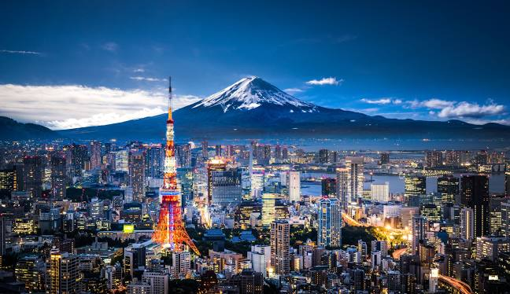
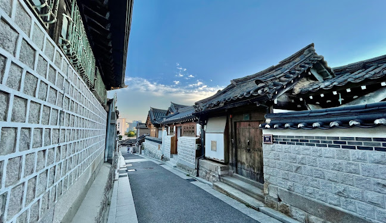
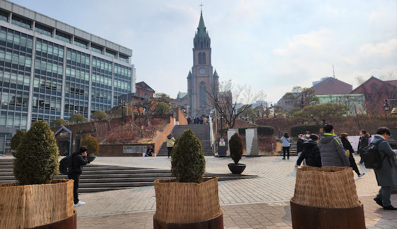
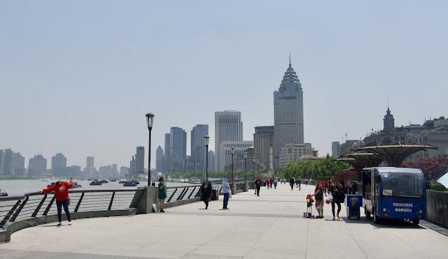
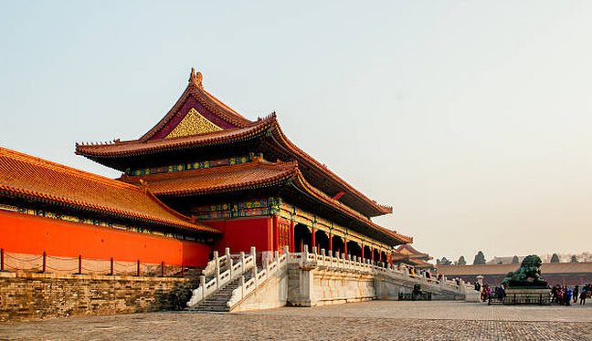
道頓堀（道頓崛）位於大阪府大阪市中央區，是一個沿著運河「道頓堀川」延伸的鬧區，全長約2.9公里，北側和南側分別是大阪有名的繁華街區「宗右衛門町」 和「法善寺橫丁」，其間散佈有許多餐廳、劇院、觀光景點和土特產商店等。
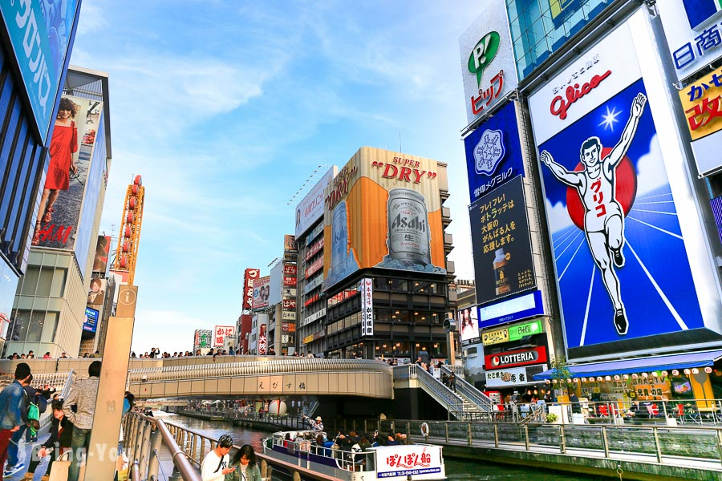
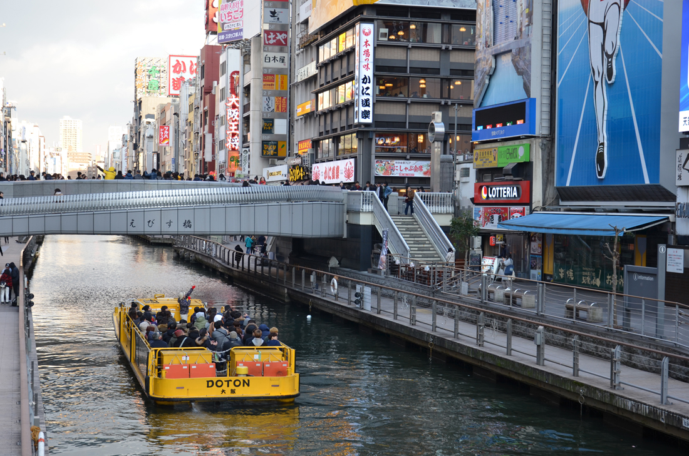
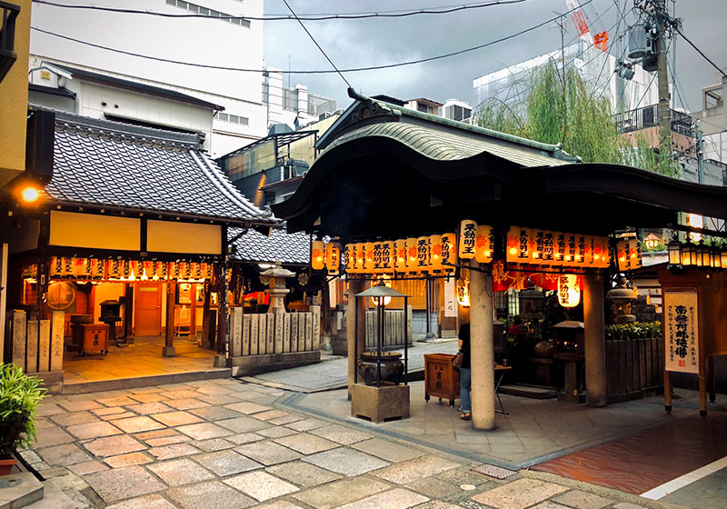
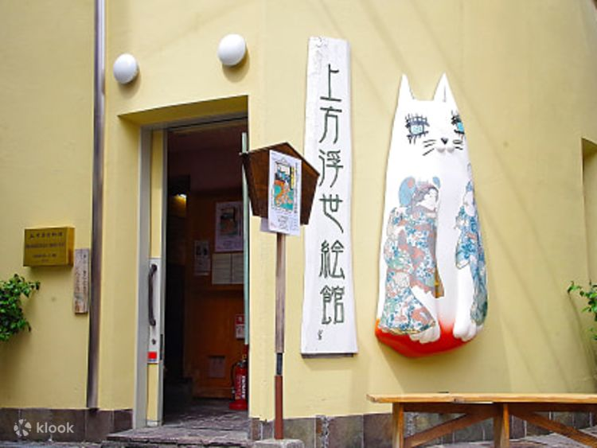
空間設計是經由宮崎駿的構想而來，館內除了展示宮崎駿創作的作品手稿、電影動畫製作相關的展覽品之外，就連博物館本身都宛如置身在動畫裡的場景一樣，是非常受歡迎的景點。
➢地址：東京都三鷹市下連雀1丁目1−83
➢開放時間：10:00~18:00，週二公休
➢網站：https://www.ghibli-museum.jp
➢門票:成人、大學生1,000日圓，國中～高中生700日圓，小學生400日元，幼兒（4歲以上～小學）100日圓，4歲以下免費入場。
➢交通資訊
►接駁車：搭乘JR 中央・總武線（各站停車）、中央線（快速）至「三鷹站」，再從三鷹站南口出來後轉搭接駁巴士（接駁車時刻表）。
搭乘接駁車需要收費，接駁巴士價錢：大人210日圓（單趟）、320日圓（來回）；小孩110日圓（單趟）、160日圓（來回）
►公車：搭乘中央線到吉祥寺站，於吉祥寺南口搭乘調布方向公車（吉01、吉02、吉03、吉04、吉06、吉11、吉14）→於「萬助橋站」下車→步行5分鐘即可抵達
►步行：
-搭乘JR中央線到三鷹站，從南口出站，沿著玉川上水風之散步道步行約15分鐘即達，沿途都有美術館方向的看板指示。
-搭乘中央線到吉祥寺站，穿過井之頭恩賜公園後可看到吉卜力美術館的指標，步行需要20分鐘。
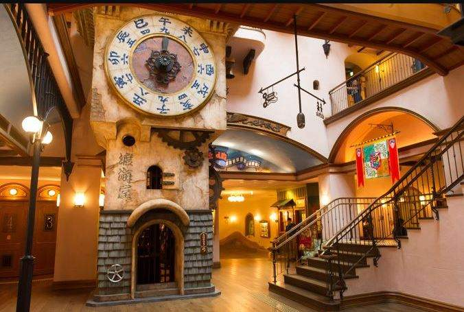
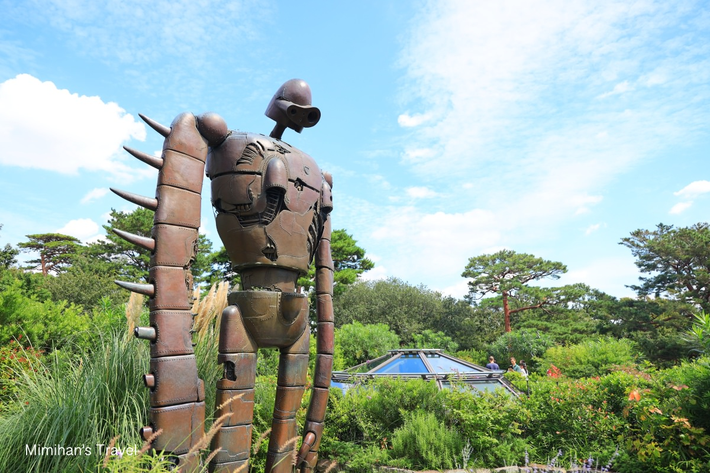
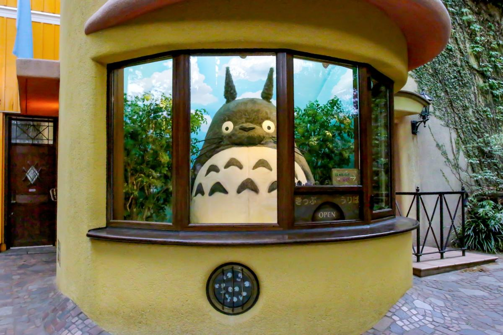
世界遺產「富士山」是日本最高的山峰，也是日本的象徵。自古以來就作為山岳崇拜的對象和藝術創作的源泉，對日本人的價值觀及日本文化產生了巨大的影響。
寺院內有許多歷史價值極高的精彩看點，包括被指定為國寶和重要文化財產的建築物等，非常值得一遊。此外，豐富的自然景觀也是令人流連忘返的魅力之一。
➢交通:
►京都市交通局（京都市巴士）
206路開往東山通北大路巴士終點站方向
100路 開往清水寺、祗園、銀閣寺方向
►京都巴士
18路 開往大原方向（僅星期六、國定假日運行）
➢參拜時間
| 6:00 - 18:00 |
1月1日～3月24日 4月3日～6月30日 9月1日～11月17日 2月1日～12月31日 |
|---|---|
| 6:00 - 18:30 |
7月1日～8月13日 8月17日～8月31日 |
| 6:00 - 21:30（21:00受付終了） |
3月25日～4月2日（春季夜間特別參拜） 8月14日～8月16日（千日詣/夏季夜間特別參拜） 11月18日～11月30日（秋季夜間特別參拜） |
➢票價
►大人:400日圓
►國中生・小學生:200日圓
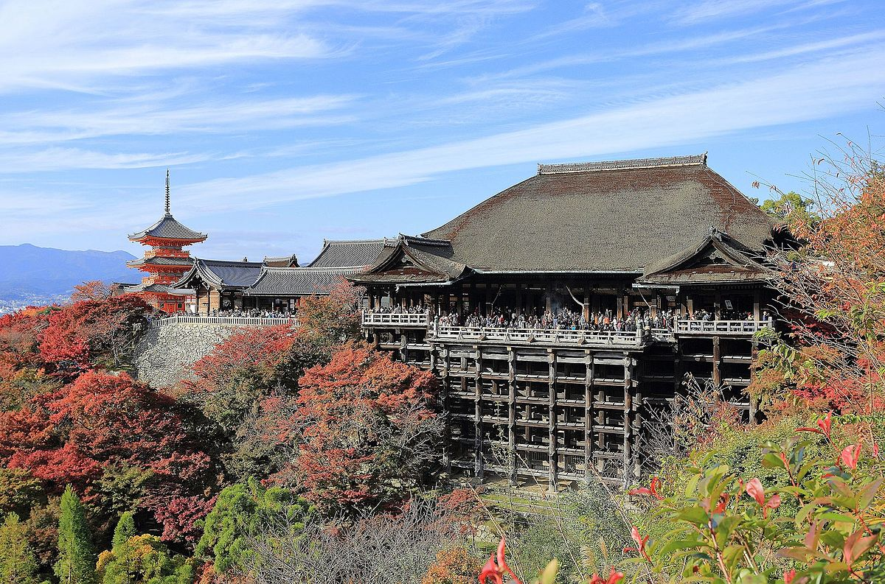
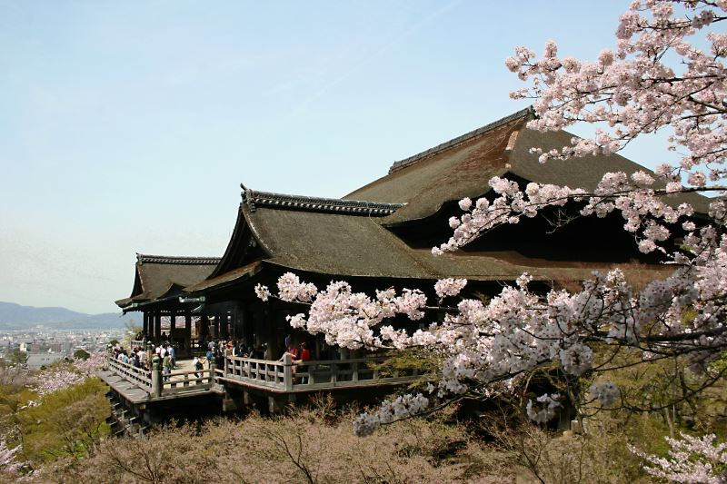
是擁有600年歷史的傳統住宅區，這裡自古以來就是兩班貴族的聚居地，保存了朝鮮時代上流階層的瓦屋建築風格，呈現出過去貴族生活的風貌。 原本僅有幾戶高柱大門的豪宅及30多棟韓屋，隨著日治時期末和韓戰後的發展，逐漸擴大成現今的樣貌。
➢首爾地鐵：搭乘【地鐵3號線】到安國站（328），1、2、3號出口皆可抵達。
➢首爾公車：搭乘綠色的支線公車【鐘路 02】公車到北村韓屋村站／敦美藥店站下車。
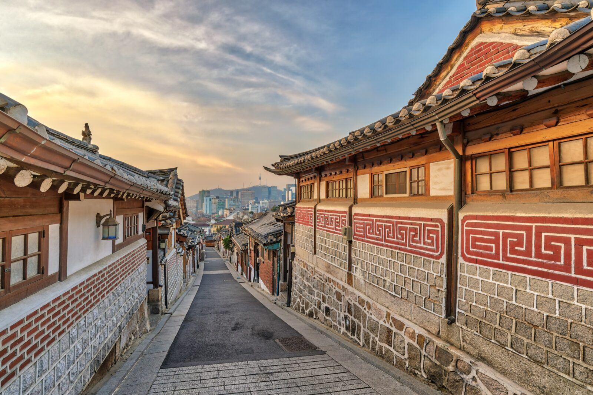
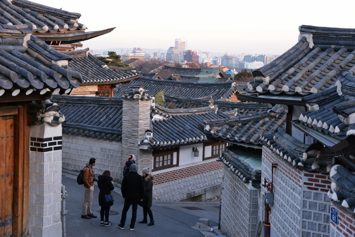
可說是韓國旅遊的入門景點，整個明洞商圈聚集了各大化妝品與服飾品牌，再加上韓國美食、小吃，還有各式韓國在地體驗，在首爾眾多景點中有著其不敗的地位。
| 機場巴士 6001 |
➢ 仁川T1發車首末班時間：平日5:30、23:05；假日5:40、23:05 ➢ 車資：15,000韓元 |
|---|---|
| 機場巴士 6015 |
➢ 仁川T1發車首末班時間：平日5:45、23:15；假日6:05、23:15 ➢ 車資：15,000韓元 |
| 機場巴士 6701 |
➢ 仁川T1發車首末班時間：4:53、22:50 ➢ 車資：16,000韓元 |
非常純粹的哥德式建築，在設計時屏除掉不必要的裝飾，讓它呈現出哥德式最完美純粹的樣子。而教堂裡頭不同於外觀的純粹，有著相當華麗的一面， 尤其是為了向不識字者傳達教義而製作的彩繪玻璃窗，為這座教堂增添了藝術的價值。
➢ 地圖
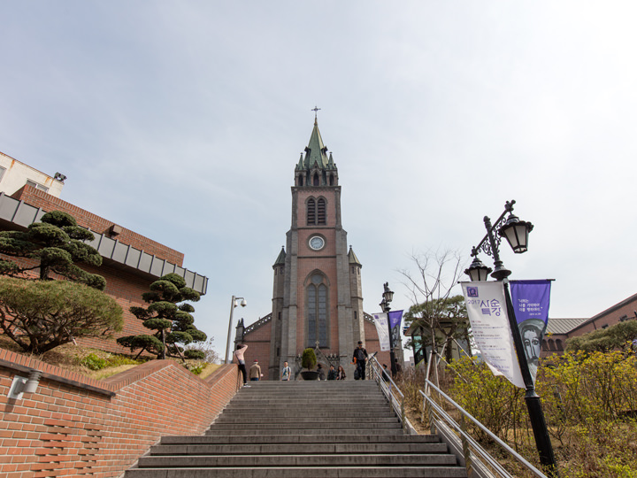
➢ 營業時間
► 週二～五 9:00 – 19:00 週六 9:00 – 19:00
► 週日7:00 – 21:00 週一不營業
普信閣的二樓有著大大的鐘，在朝鮮時期是用來向百姓報時的，而如今則是每年跨年時作為祈福使用。
➢ 地圖
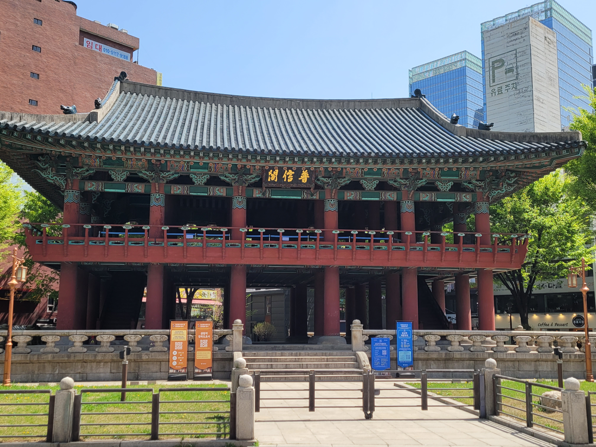
明洞這條名為「趣味路」的路線由五顏六色的插畫點綴，有一種獨身於這繁雜的明洞的清新感。在成為趣味路之前，這條路本來就是觀光路線之一， 不過後來漸漸沒落了。而在2013年時，包含創作出《未生》、《與神同行》的知名漫畫作家們在內，由超過70名的漫畫家無償提供了他們的作品內容。
➢ 地圖
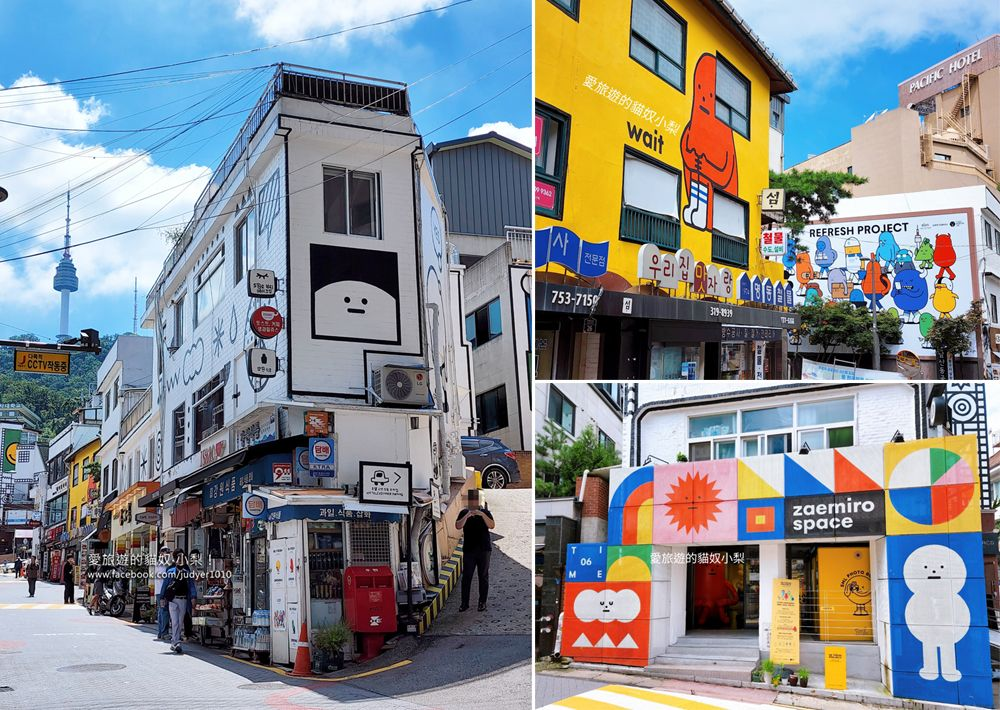
一半以上是在室內，不管颳風下雨都可以玩得很開心，附近還有樂天免稅店、樂天百貨、樂天超市、樂天世界塔等觀光購物景點，構成一個範圍很大的娛樂天堂， 更棒是它就在首爾市裡，搭地鐵就能來玩很方便。
➢ 營業時間
週一至週四10:00~20:00
週五至週日10:00~20:30
➢ 門票
票價 👈詳細票價資料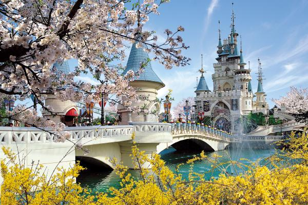
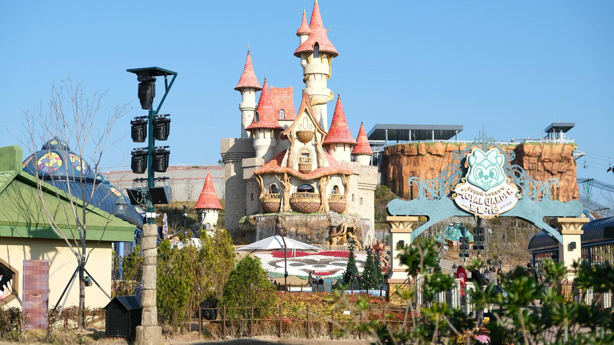
是中國萬里長城的其中著名一段，位於首都北京市懷柔區的軍都山中，是明長城北京段的重要組成部分，也是北京旅遊的一個勝地，2002年被評為4A級景區，
2011年被評為國家5A級旅遊景區，現仍有一部分尚未開發，不對遊客開放。每年都會有大量中外遊客慕名攀登。
►成人票45人民幣，兒童票25人民幣
►長城索道成人往返票80人民幣，兒童40人民幣 ; 索道單程票成人60人民幣，兒童30人民幣
►施比得滑道成人往返80人民幣，兒童50人民幣 ; 施比得滑道成人單程60人民幣。
夏季7:00-18:30 ; 冬季7:30-17:30
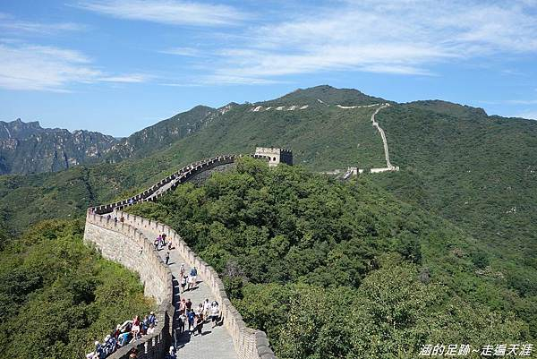
於1990年開始建造至1994年建置完成，現已成為「90年代上海十大新景觀」及「十佳景點」之一，更是中國大陸首批4A級的旅遊景點；東方明珠塔集廣播電視發佈、 觀光娛樂、住宿餐飲、會展及購物等設施於一體，是21世紀上海市的標誌性建築之一，吸引不少來上海旅遊的觀光人士慕名前來一探究竟。
AM08：30—PM21：30
乘坐東方明珠浦江遊覽船沿江暢遊
►A票：太空艙(安排專員導覽)+上球體+下球體+陳列館 CNY$180元
►B票：上球體+下球體+陳列館 CNY$160元
►C票：上球體+陳列館 CNY$120元
►公車：搭乘81、82、85、870、871、872、輪渡陸金線等，即可到達上海東方明珠塔。
►地鐵：搭乘地鐵至『陸家嘴站』，即可到達上海東方明珠塔。
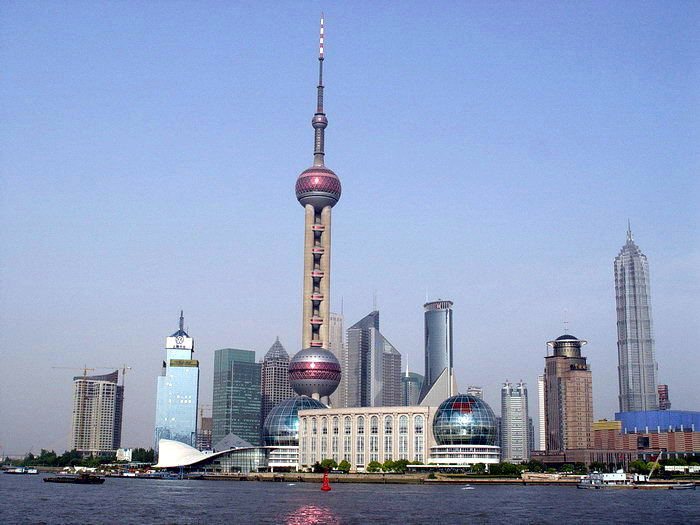
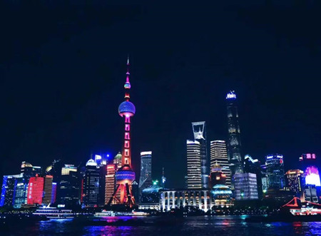